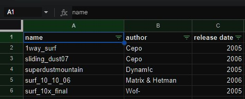

[12-02-2024] | YEAH WELL ITS FREE SO
cs-surf-archive.github.io, my website whose purpose is detailed in this article, has a tech stack that strictly utilizes free tiers from various providers. This includes:
And it all works and it's FREE. A series of Python scripts and a little Javascript tie it all together, allowing me to dynamically generate the website when we receive new information.
Spending even just $5 a month could have eliminated almost all of the hurdles I've had to jump through to get this working, but keeping it free has been a fun challenge.
|
One of the core goals of this project was to make all of the information easily editable by anyone in the community. So, a full on database wasn't really an option. |

The "backend" of the "database" (it's a spreadsheet lol)
|
Another goal of the website was to keep the time spent working on it to a minimum. I didn't want to waste a bunch of time on something that might not catch on.
Well, it caught on, and we have over 300 rare and hard to find maps. Over the last 2 years, multiple creators have given us maps that hadn't been seen online for nearly 2 decades.
The general flow of the code is this:
This all helps to ensure that the data in the Sheet and Drive are tightly coupled, so the data between the 2 always matches.
Naturally, when doing something as arrogant as relying on free portions of paid products, there's going to be breaking changes that I can do nothing about.
The first was Google "breaking" the way I embedded images straight out of Drive. It was apparent from when I first developed this feature that it wasn't an intended use. Well, according to 319531488, it wasn't. Some time around January I pulled the site up and noticed that no images would load.
After some searching around I found someone providing a workaround for this solution at lienuc.com. After quickly modifying the way links are generated for screenshots in my code, it was up and running again. I don't expect this to be a permanent fix, but it's working for now.
This next one's on me. When I originally wrote the code, I wrote the tests to check one row at a time, then update each individual row. This worked fine when we had ~50 maps. Now, if I add a map in the Drive and run the code to make an entry for it in the Sheet, every row beneath the map's entry needs to be updated. The free Google Sheets API has a limit of 300 requests per minute.. This limit can pretty quickly get hit when updating a row at a time.
The eventual fix is to build the whole sheet in the code and update it in one request. The site's been running for a couple years, and I update maybe once every 2 months, so I just haven't gotten around to it yet.
All in all, the challenge of keeping everything free has presented some interesting technical problems that served as some solid learning opportunities. I'm happy with how this site turned out, and really enjoy that the tech stack allows contributors to update it with no barriers to entry.
HOME